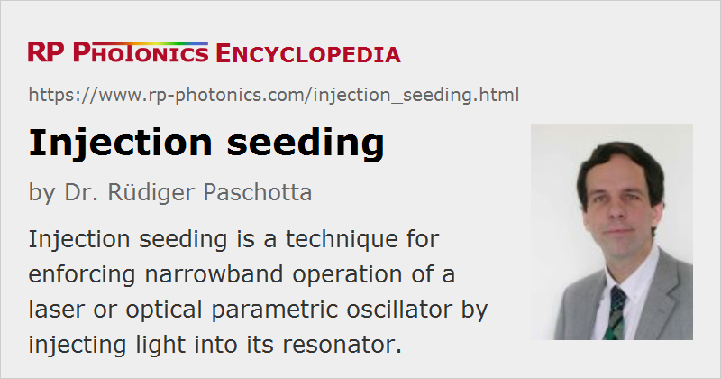

Injection Seeding
Definition: a technique for enforcing narrowband operation of a laser or optical parametric oscillator by injecting light into its resonator
Categories: lasers, fluctuations and noise, light pulses, methods
How to cite the article; suggest additional literature
Author: Dr. Rüdiger Paschotta
Injection seeding is a technique which is mostly applied to pulsed lasers and optical parametric oscillators, usually with the main goal of achieving emission with a narrower optical bandwidth (linewidth). Essentially it means that light from a seed laser, which is usually a single-frequency laser in continuous-wave operation, is injected into a Q-switched slave laser or into a nanosecond optical parametric oscillator at the beginning of a pulse buildup period. Without that seed light, the slave laser or OPO would normally emit on multiple resonator modes having an optical gain of comparable magnitude, and the power distribution on several modes may fluctuate from pulse to pulse. If the optical frequency of the seed light is close enough to the resonance frequency of one particular resonator mode of the slave device, that mode can start oscillation with a much higher power than all the competing modes, and can therefore strongly dominate in the output pulse. In that way, the emission bandwidth is drastically reduced, compared with unseeded (free-running) emission, and the temporal pulse profile can be smoother, because mode beating is avoided.
Another effect of injection seeding is a significantly reduced pulse build-up time. This is particularly useful in an OPO with a nanosecond pump source, where the pump power can not be converted during the pulse build-up phase: a shorter build-up time increases the output pulse energy and conversion efficiency. For a Q-switched laser, the reduced build-up time will usually not influence the power efficiency, but with proper stabilization of the resonator frequencies (see below), the timing jitter may be reduced.
Injection seeding does not require an exact match of the seed laser frequency and a resonance of the slave laser. It is sufficient that some substantial optical power is injected into one of the resonator modes, and for that purpose some moderate mismatch of frequencies (some fraction of the free spectral range of the slave laser resonator) is acceptable. The frequency of the generated pulse may then deviate from the injected frequency; this is in contrast to the method of injection locking, where the emission frequency exactly equals the injected frequency. Frequency locking may occur in an injected-seeded laser, but the method can work also outside the narrow locking band.
Different methods can be used for the (approximate) stabilization of the slave laser frequency to the seed frequency. An error signal can be generated e.g. with a dithering technique, as also used for the stabilization of continuous-wave lasers. Alternatively, it is possible to adjust the slave laser's frequency automatically (e.g. via moving a resonator mirror) so that the build-up time is minimized. It is also possible to scan some range of frequencies and fire the Q switch as soon as a resonance is detected (ramp-fire technique).
Self-injection Seeding
An obvious disadvantage of the conventional method of injection seeding is that an additional seed laser (master laser) is required. Self-injection seeding is a modified method, where the seed laser is eliminated. The seed light is then produced from the seeded laser itself, or at least using the same gain medium.
For example, a dual-cavity arrangement has been demonstrated, which contains a Pockels cell as an optical switch [3]. In the initial phase, directly after injection of a pump pulse into the gain medium, the laser resonator contains frequency-selective elements, which introduce some losses and could not tolerate a high power level, but allow for the build-up of light with a narrow linewidth. Once a certain power level has been reached, the Pockels cell is switched, and this reconfigures the laser resonator so that the light does no longer go through the sensitive frequency-selective elements. Although the laser resonator is much less frequency-selective in this state, the light generated in the previous phase acts as a seed so that the linewidth remains narrow during subsequent further amplification.
A variant of this technique uses prelasing in the same resonator, when the resonator loss is kept at a relatively high level. Although the resonator is then not particularly frequency-selective in the prelasing phase, the linewidth may be strongly reduced.
Suppliers
The RP Photonics Buyer's Guide contains 3 suppliers for injection-seeded lasers.
Questions and Comments from Users
Here you can submit questions and comments. As far as they get accepted by the author, they will appear above this paragraph together with the author’s answer. The author will decide on acceptance based on certain criteria. Essentially, the issue must be of sufficiently broad interest.
Please do not enter personal data here; we would otherwise delete it soon. (See also our privacy declaration.) If you wish to receive personal feedback or consultancy from the author, please contact him e.g. via e-mail.
By submitting the information, you give your consent to the potential publication of your inputs on our website according to our rules. (If you later retract your consent, we will delete those inputs.) As your inputs are first reviewed by the author, they may be published with some delay.
Bibliography
| [1] | J. E. Bjorkholm and H. G. Danielmeyer, “Frequency control of a pulsed optical parametric oscillator by radiation injection”, Appl. Phys. Lett. 15, 171 (1969), doi:10.1063/1.1652954 |
| [2] | U. Ganiel et al., “Analysis of injection locking in pulsed dye laser systems”, IEEE J. Quantum Electron. 12 (11), 704 (1976), doi:10.1109/JQE.1976.1069060 |
| [3] | N. P. Barnes et al., “A self injection locked, Q-switched, line-narrowed Ti:Al2O3 laser”, IEEE J. Quantum Electron. 24 (6), 1021 (1988), doi:10.1109/3.224 |
| [4] | S. Basu and R. L. Byer, “Short pulse injection seeding of Q-switched Nd:glass laser oscillators – theory and experiment”, IEEE J. Quantum Electron. 26 (1), 149 (1990), doi:10.1109/3.44928 |
| [5] | N. P. Barnes and J. C. Barnes, “Injection seeding I: Theory”, IEEE J. Quantum Electron. 29 (10), 2670 (1993), doi:10.1109/3.250390 |
| [6] | J. C. Barnes et al., “Injection seeding II: Ti:Al2O3 experiments”, IEEE J. Quantum Electron. 29 (10), 2684 (1993), doi:10.1109/3.250391 |
| [7] | D.-K. Ko et al., “Self-seeding in a dual-cavity type pulsed Ti:sapphire laser oscillator”, Opt. Lett. 20 (7), 710 (1995), doi:10.1364/OL.20.000710 |
| [8] | A. Fix et al., “Tunable beta-barium borate optical parametric oscillator: operating characteristics with and without injection seeding”, J. Opt. Soc. Am. B 10 (9), 1744 (1993), doi:10.1364/JOSAB.10.001744 |
| [9] | A. J. McGrath et al., “Injection-seeded, single-frequency, Q-switched erbium:glass laser for remote sensing”, Appl. Opt. 37 (24), 5706 (1998), doi:10.1364/AO.37.005706 |
See also: injection locking, seed lasers
and other articles in the categories lasers, fluctuations and noise, light pulses, methods
|  |
If you like this page, please share the link with your friends and colleagues, e.g. via social media:
These sharing buttons are implemented in a privacy-friendly way!